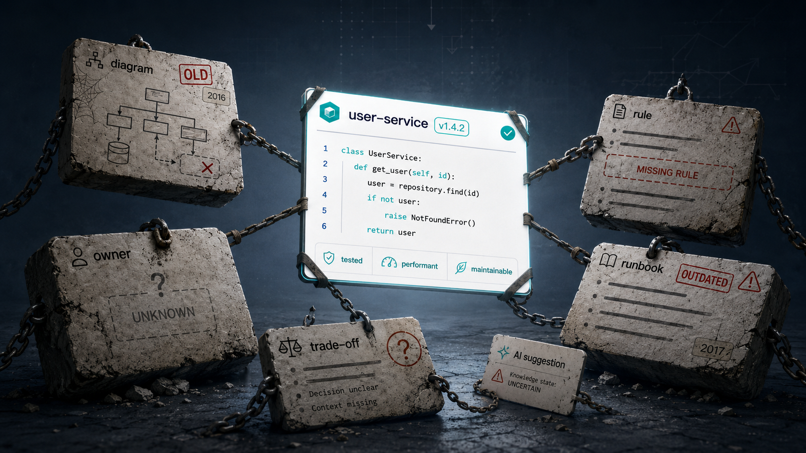
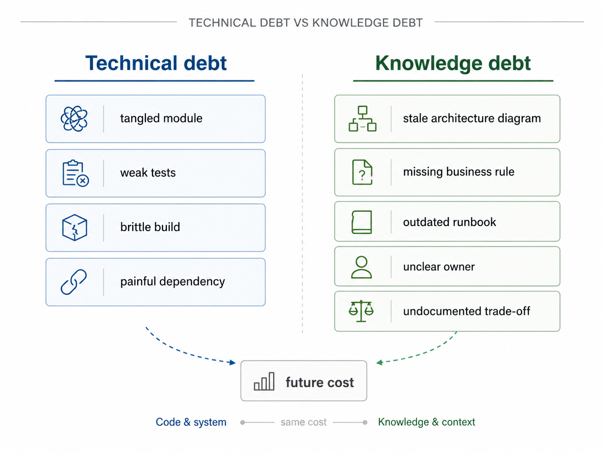
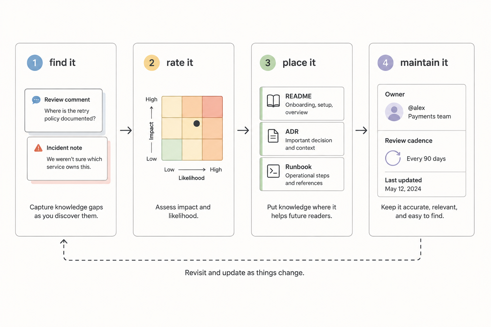

The team had paid down a lot of technical debt.
The old service had been split into clearer modules. The slow tests were cleaned up. The dependency graph was simpler. The build was faster. A few risky classes were rewritten. On paper, the codebase was healthier than it had been in years.
Then a product change arrived.
Nobody was sure which team owned the billing exception. The architecture diagram still showed a dependency that had been removed six months earlier. The runbook described a rollback process that no longer matched the deployment pipeline. A business rule about enterprise customers lived only in review memory. The original trade-off behind a strange data model was never written down.
The code was cleaner.
The system was still hard to change.
That is knowledge debt.
Knowledge debt is the accumulated cost of engineering knowledge that is missing, stale, scattered, misleading, inaccessible, or owned by nobody.
It includes stale architecture diagrams, missing business rules, outdated runbooks, unclear ownership, undocumented trade-offs, obsolete ADRs, missing test examples, contradictory standards, and incident lessons that never make it back into normal engineering workflow.
It is not just "bad documentation." Documentation is part of it, but the problem is wider. Knowledge debt appears whenever important understanding does not reliably reach the people and tools doing the work.
Traditional technical debt affects code maintainability. Knowledge debt affects comprehension. It changes how developers understand a system, how reviewers judge a change, how teams respond to incidents, and how AI assistants generate code, tests, and summaries.
Knowledge debt does not replace technical debt as a concept. It sits beside it.

And in AI-assisted teams, it is becoming harder to ignore.
Technical debt has a sibling
The technical debt metaphor is useful because it explains a common engineering trade-off. A team takes a shortcut today and pays interest later. Ward Cunningham used the debt metaphor to describe the cost of shipping with incomplete understanding and then learning from the system. Martin Fowler's writing on technical debt also emphasizes that not all debt is the same. Some is deliberate. Some is reckless. Some is discovered only later.
Knowledge debt works in a similar way, but the principal is different.
With technical debt, the debt might be a tangled module, weak test coverage, a brittle build, a poor abstraction, or a dependency that is painful to upgrade.
With knowledge debt, the debt is the missing explanation around the system:
- why this module boundary exists
- which customer rule changes the normal flow
- who owns the shared table
- which architecture decision is current
- why the team rejected a simpler design
- how to recover safely when the queue stalls
- which test examples represent the current standard
Technical debt often slows the act of changing code.
Knowledge debt slows the act of knowing what change is correct.
The two feed each other. A messy system is harder to explain. Missing decision context makes future refactoring riskier. Unclear ownership allows code problems to sit longer. Outdated runbooks make operational fixes more dangerous. A stale architecture diagram can cause a team to add new code in the wrong place, creating new technical debt from old knowledge debt.
What knowledge debt looks like
Knowledge debt rarely announces itself. It shows up as friction.
A stale architecture diagram says Service A calls Service B directly. In reality, the dependency moved behind an event stream months ago. A new developer uses the diagram during onboarding. An AI assistant retrieves it while answering a design question. A reviewer sees a pull request that reintroduces the old direction. The diagram was not harmless. It changed the path people considered normal.
A missing business rule creates a different kind of debt. The code says cancellation is allowed. The tests cover the ordinary customer path. What they do not show is that enterprise customers require contract review before cancellation. The rule came from an old escalation. The team knows it when the right reviewer is present. AI does not know it unless the rule is in the ticket, tests, docs, examples, or retrieved context.
An outdated runbook is knowledge debt with operational consequences. It may describe a manual rollback step that the pipeline no longer supports. It may point to an old dashboard. It may tell engineers to restart a worker that has been replaced by autoscaling. During normal work, nobody notices. During an incident, the debt comes due.
Unclear ownership is another form. A service exists. People depend on it. Nobody is sure who approves changes. The last major decision came from a team that no longer owns the domain. Review slows down because responsibility is ambiguous. Agents and assistants cannot fix that. They may generate a plausible change, but they cannot create accountability where the organization has none.
Undocumented trade-offs are one of the most expensive forms of knowledge debt. A strange design may look accidental years later. Maybe the team chose it to satisfy a reporting constraint, reduce data migration risk, protect latency, avoid vendor lock-in, or support a customer migration. If the trade-off was never captured, a future team may "simplify" the design and remove the reason it worked.
This is why knowledge debt is not a documentation aesthetics problem.
It is a delivery risk.
AI makes the interest visible
Human teams have always paid interest on knowledge debt.
Onboarding takes longer. Review comments repeat. Senior engineers become bottlenecks. Incident response depends on who is online. Architecture discussions revisit decisions nobody can find. Product rules get rediscovered through defects.
AI-assisted work makes the interest more visible because assistants operate on available context.
DORA's guidance on AI-accessible internal data is useful here. AI tools become more useful when they can work with relevant internal context such as codebases, documentation, style guides, operational information, and architecture diagrams. The reverse is also true in practice: missing or misleading internal context makes assistance weaker.
If the current standard is absent, the assistant may copy the old pattern. If the stale diagram is easier to retrieve than the current design, the answer may be confidently wrong. If a business rule is missing from tests and tickets, generated tests may miss the exact case that matters. If ownership is unclear, an agent can produce a change faster than the team can decide who should approve it.
This is not the assistant's fault in every case.
It is the system reflecting the knowledge it can reach.
AI does not create most knowledge debt. It exposes it. Sometimes it amplifies it because the output arrives quickly and looks polished. A generated summary can sound complete while missing the important exception. Generated tests can look clean while covering only the documented path. A review assistant can reason from an outdated ADR and still sound careful.
That creates misleading confidence.
The team sees progress, but the understanding behind the progress is weak.
Not all knowledge deserves the same treatment
The answer is not to document everything.
That creates a different debt: long pages nobody trusts, stale wikis, duplicated standards, and retrieval results full of conflicting guidance.
Knowledge debt management starts with impact.
Ask which missing or stale knowledge changes delivery outcomes:
- Does it affect implementation?
- Does it affect tests?
- Does it affect architecture decisions?
- Does it affect security, privacy, or compliance?
- Does it affect rollout, rollback, or incident response?
- Does it affect ownership or review?
- Does it repeatedly slow onboarding or planning?
If the answer is yes, the knowledge probably needs a better home.
The right home is not always a document. Sometimes it is an ADR. Martin Fowler describes an Architecture Decision Record as a short record of a decision, context, and consequences. Sometimes the right home is a README note, a test example, a runbook update, a code owner rule, a PR template question, a schema check, an architecture test, or a CI gate.
Some knowledge should remain human judgment. Some knowledge is sensitive and should not be broadly exposed to AI tools. Some knowledge is still evolving and belongs in active design discussion before it becomes durable guidance.
Good knowledge debt management is selective.
A practical model for managing knowledge debt
Use a simple sequence: find it, rate it, place it, maintain it.

Find it by looking for repeated review comments, onboarding questions, incident confusion, stale diagrams, contradictory docs, unclear owners, missing runbook steps, and business rules that only a few people remember. AI mistakes are useful signals here. When an assistant misses a rule, ask whether it had any realistic way to know the rule.
Rate it by risk. Not every missing note deserves immediate work. A stale diagram for an abandoned prototype matters less than a stale runbook for a production payment service. Classify knowledge debt by where it can hurt: delivery speed, review quality, production safety, security, customer behavior, architecture drift, or onboarding.
Place it where the next person or assistant will need it. Business rules belong in tickets, tests, product specs, or service docs. Architecture decisions belong in ADRs linked from relevant code. Operational behavior belongs in runbooks close to alerts and deployment workflows. Ownership belongs in service catalogs, CODEOWNERS files, READMEs, or team maps. Trade-offs belong near the decision, not only in someone's memory.
Maintain it so the debt does not return. A diagram should have a date and owner. An ADR should link to a superseding decision when it changes. A runbook should be tested or reviewed after incidents. A README should change with the workflow. A pull request that changes behavior should update the context future work will rely on.
The documentation chapter in Software Engineering at Google makes this practical point: documentation needs ownership, maintenance, and a clear place in the engineering workflow. DORA's work on documentation quality points to similar qualities: clarity, findability, and reliability.
Knowledge that affects delivery should not be treated as optional housekeeping.
How to pay it down without creating bureaucracy
Start where the interest is highest.
If review keeps catching the same missing edge case, add an example test or PR checklist item. If incidents keep exposing stale recovery steps, update and rehearse the runbook. If developers keep asking who owns a service, make ownership visible in the repository and service catalog. If AI keeps copying an old pattern, mark the old pattern as deprecated and link the current ADR.
Small paydowns matter.
You do not need a grand knowledge program. You need fewer places where important engineering knowledge disappears.
A useful habit is to attach knowledge debt cleanup to work that already reveals it:
- When a review repeats the same explanation, capture the rule.
- When an incident exposes a bad runbook, update the runbook before the incident is closed.
- When an architecture decision changes, supersede the old ADR.
- When a service owner changes, update ownership where engineers look.
- When a generated change misses context, improve the context path, not only the prompt.
This is the same discipline teams already understand from technical debt.
You do not pay down every debt immediately. You make it visible. You assess the risk. You prioritize. You reduce interest where it is hurting the team.
Three practical takeaways
First, treat knowledge debt as real engineering debt when it affects implementation, testing, review, ownership, incidents, or architecture decisions.
Second, use AI-assisted mistakes as diagnostics. If an assistant missed a rule, ask whether the rule was captured, current, findable, and close to the workflow.
Third, pay down knowledge debt in the form that fits the risk. Some debt needs a README update. Some needs an ADR. Some needs a test. Some needs a runbook. Some needs ownership. Some needs a CI check.
Add knowledge debt to the conversation
Technical debt is already part of engineering language. Teams discuss it in planning, design reviews, retrospectives, and roadmap trade-offs.
Knowledge debt deserves the same seriousness.
The next time a team says, "We need to clean up this service," ask about more than the code.
Do we know who owns it? Is the architecture diagram current? Are the important business rules visible? Are the runbooks safe? Are old decisions linked to current decisions? Do the tests show the behavior that matters? Would a new developer understand why the system works this way? Would an AI assistant have the context needed to help safely?
Those questions are not documentation theater.
They are delivery questions.
AI-assisted software teams do not only need cleaner code. They need cleaner knowledge around the code.
Because when humans and AI cannot understand what the system is supposed to do, every change becomes slower, riskier, and easier to get wrong.